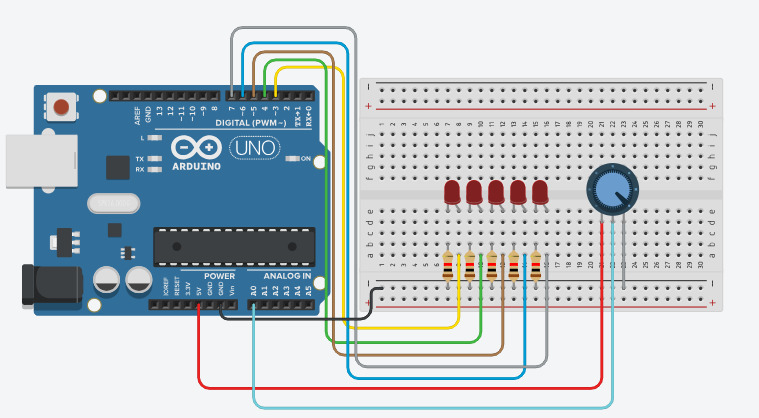

LED Pattern Control using Potentiometer
In this project, you will learn how to control multiple LEDs using a potentiometer. As you rotate the knob, LEDs turn ON step-by-step, creating a smooth bar-style pattern. This project is perfect for understanding analog input and multi-output control.
BeginnerComponents Required
- Arduino Uno
- 10kΩ Potentiometer
- 5 LEDs
- 5 × 220Ω Resistors
- Breadboard
- Jumper Wires
- USB Cable
Circuit Connections
Follow these steps to connect the potentiometer and LEDs with Arduino:
- Connect potentiometer middle pin to A0.
- Connect other pins to 5V and GND.
- Connect LEDs to pins 3, 4, 5, 6, 7 using resistors.
- Connect LED cathodes to GND.

The potentiometer controls how many LEDs turn ON, forming a progressive lighting pattern.
Arduino Code
int potPin = A0;
int leds[] = {3,4,5,6,7};
void setup() {
for(int i=0;i<5;i++){
pinMode(leds[i], OUTPUT);
}
}
void loop() {
int value = analogRead(potPin);
int level = map(value, 0, 1023, 0, 5);
for(int i=0;i<5;i++){
if(i < level){
digitalWrite(leds[i], HIGH);
} else {
digitalWrite(leds[i], LOW);
}
}
delay(50);
}
Code Explanation
LED Array
The LED pins are stored in an array, allowing easy control using loops.
Analog Input
The potentiometer value is read using analogRead(), which gives values from 0 to 1023.
Mapping Values
The map() function converts the input into 5 levels, each representing an LED.
Pattern Logic
LEDs turn ON progressively depending on the potentiometer position, creating a bar pattern effect.
Common Mistakes & Troubleshooting
- LED not glowing: Check polarity and resistor.
- All LEDs ON: Potentiometer wiring may be incorrect.
- No response: Verify A0 connection.
What You Learned
- Reading analog input from potentiometer
- Controlling multiple LEDs
- Using arrays and loops
- Creating LED patterns